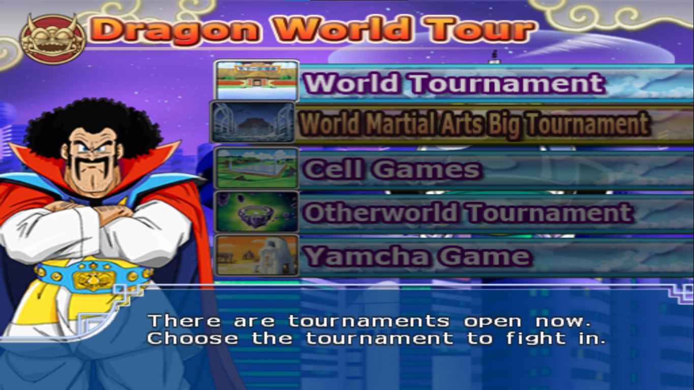

Aqui você encontrará informações sobre os diferentes modos de jogo que este apresenta.
Dragon History
Como o nome indica, esse é o "modo história" do jogo. Assim como seus antecessores, o jogo conta brevemente a história do anime,
com inclusões de extras como filmes e o GT.
As sagas são divididas em partes chamadas de scenarios (Cenários), cada uma adaptando as lutas mais importantes de cada arco.
O foco é mais na gameplay, com o enredo sendo transmitido por pequenas narrações para contexto e pelos dialogos entre os personagens
durante as lutas.
Dentro do menu desse modo, há duas opções, a primeira é para escolher qual scenario e luta você quer jogar
e a segunda é para escolher a dificuldade das lutas, separadas em fácil, médio e díficil.
Captura de Tela dos menus do modo Dragon History
Ultimate Battle
O Ultimate Battle é um modo secundário de jogo, com diversos submodos inclusos.
O primeiro deles é o Mission 100, como o nome diz, nesse modo você deve completar
as 100 "missões", que na verdade são lutas contra personagens diversos, escolhidos
de acordo com a temática da mesma. Os oponentes são pré definidos, mas após escolhir a
missão, você pode escolher com qual personagem jogar, limitado pelos DP's (explicados no modo duel)
Além desse há o Sim Dragon, o mais diferente modo de jogo. Com uma pegada mais RPG, aqui você
escolhe um personagem e através de uma interface simples ir treinando para enfrentar oponentes
a cada 10 dias. Por dia você pode realizar três ação entre treinar, explorar e descansar. Treinar
consome seu HP, mas aumenta seus atributos de ataque e defesa conforme as 3 opções de treino:
focado em ataque, defesa ou os dois, o que custa mais HP. Ao explorar, você passa por locais do anime,
podendo encontrar itens ou outros personagens, que vendem ou itens ou apresentam minigames que fortalecem
o personagem. Enquanto descansar gasta todas as ações do dia para recuperar parte do seu HP. Alternativamente,
você pode comer uma semente dos deuses para recuperar todo o seu HP, porém seu estoque é limitado.
Captura da interface do modo de jogo Sim Dragon
O terceiro modo, inicialmente bloqueado até que se realizem 30 missões no modo Mission 100, é o Survive, aqui é bem simples
você escolhe um cenário entre as duas opções, e então escolhe um personagem para lutar contra uma horda de 50 oponentes seguidos.
No começo eles são personagens fracos e com pouca vida, mas quanto mais inimigos derrotados mais fortes eles ficam.
Além disso, o desafio maior está na sua vida, que só regenera um pouco após cada inimigo derrotado.
Captura de Tela do menu do modo de jogo Ultimate Battle
Dragon World Tour
Este é o modo "Torneio" do Jogo onde diferentes personagens são elencados para lutar uns contra os outros, vencendo aquele que ganhar as final
Aqui há dois "modos" o World Tour e o Free. O World Tour é o modo torneio de verdade, o qual é pré-definido e o que concede recompensas ao o vencer.
O torneio disponível muda de acordo com a hora do dia mostrada no menu, que varia sempre que você entra nesse modo de jogo. Já o modo Free é um torneio
"sandbox", o qual você pode escolher livremente entre os 5 torneios disponíveis, a dificuldade e a quantidade de jogadores, além dos persoangens de cada um.
Os torneios disponíveis são aqueles presentes no anime, desde o clássico Torneio de Artes Marciais até o Torneio do Outro Mundo, com alguns originais do próprio jogo.
Cada torneio tem suas próprias regras, elenco de personagens e estágios para as lutas, e cada um vêm em 3 "níveis", que é a dificuldade do torneio, alterando a agressividade
da CPU e os personagens que participarão do torneio. Além disso, cada torneio tem seu campeão único, o Cell para o Cell's Game ou o Goku Super Saiyajin 3 para o Torneio do Outro Mundo.
Os 5 torneios são:
World Tournament (Torneio de Artes Marciais)
World Martial Arts Tournament (Grande Torneio de Artes Marciais)
Cell Games (Jogos do Cell)
Otherworld Tournament (Torneio do Outro Mundo)
Yamcha Game (Jogos do Yamcha)

Captura de Tela do menu do modo de jogo World Tour
Duel
Este é o modo "Versus" do jogo, onde você pode escolher qualquer personagem do jogo para lutar contra a CPU, outro jogador, ou para assistir uma CPU contra outra CPU. Esse modo de jogo tem 3 variações:
Single Battle: Essa é batalha 1 contra 1, são escolhidos 2 personagens para lutar um contra o outro
Team Battle: Essa é a batalha entre times, podem ser escolhidos times de até 5 personagens para lutar
DP Battle: Essa é como a Team Battle, porém os times são limitados por Destructive Points ou DP. Antes de escolher os personagems, é escolhido a quantidade
de DP's disponíveis, entre 10, 15 ou 20. Aqui cada personagem custa uma quantidade diferente de DP's, baseado de acordo com a força de cada personagem.
Personagens mais fracos, como Mr.Satan e os Saibamen, custam de 1 a 2 DP, enquanto os mais fortes, como Vegito Super Saiyajin e Gogeta Super Saiyajin 4, custam de 9 a 10 DP.
Após escolher entre os mais de 160 personagens que o jogo oferece, antes de iniciar a luta também é escolhido um cenário e a música de fundo da luta.
Captura de Tela dos menus do modo de jogo Duel
Também é possível configurar a batalha, alterando o tempo limite da luta, a dificuldade da CPU, o narrador,
habilitar ou não as tranformações para cada jogador, e desabilitar a destruição dos cenários
Ultimate Training
Este é o modo "Treino" do jogo, onde se vai para aprender a como jogar o jogo de verdade. Aqui há duas seções, Training e Battle Training, que, apesar de semelhantes,
possuem funcionalidades distintas.
Training é o modo para se praticar, aqui você escolhe um personagem para jogar e outro que será seu "parceiro de treino". Neste modo, ambos personagens são imortais e o Ki, Blast Points e o tempo são ilimitados.
Dentro da batalha, é possível configurar a CPU, para deixá-la parada ou a fazer lutar com diferentes níveis de agressividade.
O outro modo, Battle Training, é o manual do jogo. Aqui são explicadas, por texto, todas as mecânicas de combate do jogo, indo do básico, passando pelo o intermediário e finalizando no avançado.
Captura de Tela do menu do modo de jogo Ultimate Training